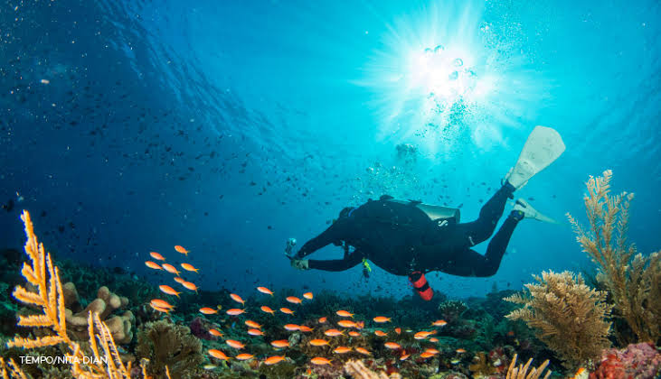
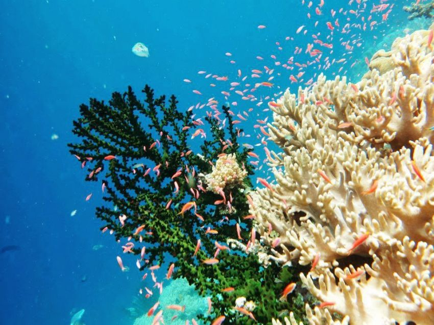

|
 Banda Neira di Maluku Tengah tidak hanya memikat lewat jejak sejarah rempah-rempahnya yang mendunia, tetapi juga menyimpan kekayaan alam bawah laut yang luar biasa. Dikelilingi oleh perairan Laut Banda yang jernih bagaikan kaca, tempat ini menjadi salah satu destinasi snorkeling terbaik di Indonesia. Keindahan bawah laut Banda Neira terpancar dari tingkat kejernihan airnya yang luar biasa. Pada kondisi cuaca cerah, jarak pandang di dalam air dapat mencapai puluhan meter, memungkinkan siapa saja menikmati keindahan terumbu karang dan biota laut langsung dari permukaan. Perairan Kepulauan Banda ini dihiasi hamparan karang mekar, karang otak, hingga karang lunak bergoyang yang sangat alami, dipadu dengan tebing bawah laut yang menambah kesan megah pada lanskap perairannya. Keanekaragaman biota lautnya pun sangat menakjubkan, mulai dari kawanan ikan tropis beraneka warna seperti ikan nemo dan mandarinfish, hingga penyu laut serta hiu sirip hitam yang sering melintas anggun. Beberapa lokasi favorit di sekitar Banda Neira menawarkan pengalaman snorkeling yang tak terlupakan. |
|
 Salah satunya adalah Lava Flow di kaki Gunung Api Banda, tempat di mana lelehan lava vulkanik memicu pertumbuhan taman karang yang sangat masif dan sehat. Selain itu, terdapat Pulau Hatta yang terkenal dengan tebing karangnya yang curam dan airnya yang sangat jernih, di mana pengunjung sering kali berenang bersama penyu. Bagi yang menyukai hamparan pasir putih dan terumbu karang dangkal, Pulau Ai dan Pulau Run menjadi pilihan sempurna yang aman dan nyaman bagi pesnorkel dari berbagai tingkat pengalaman. Untuk menikmati pesona ini secara maksimal, waktu terbaik untuk berkunjung adalah pada bulan September hingga November atau April hingga Mei saat laut dalam kondisi tenang dan jernih. Perlengkapan seperti masker, snorkel, sirip renang, serta baju pelindung matahari sangat dianjurkan agar aktivitas berenang tetap nyaman. Yang tak kalah penting, para pengunjung diharapkan selalu menjaga kelestarian alam dengan tidak menyentuh atau menginjak terumbu karang demi kelangsungan ekosistem indah ini. |
| Kembali | Beranda | Selanjutnya |